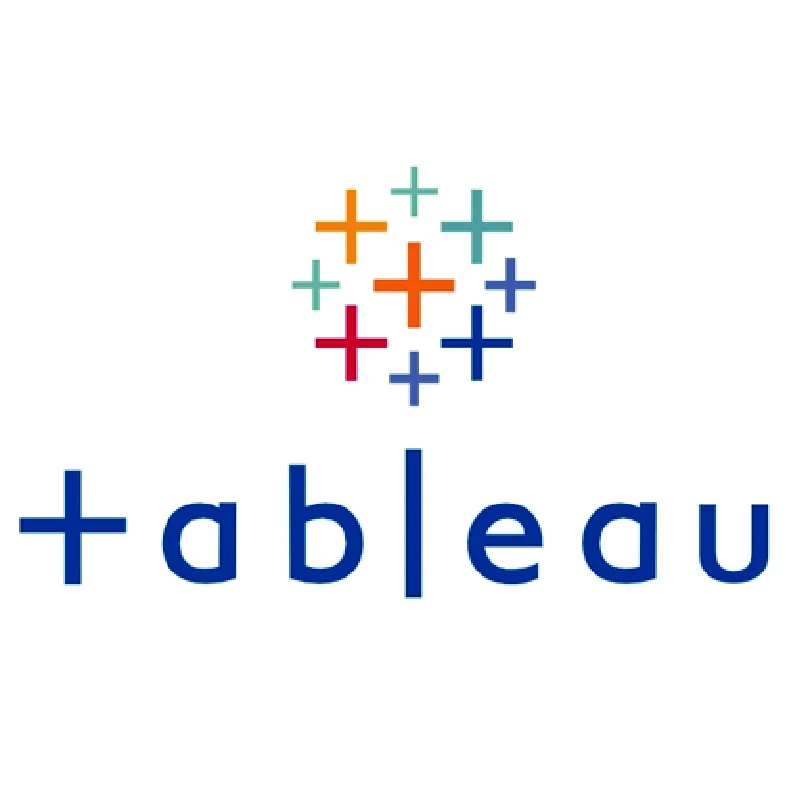

In this case study, we assist Telecom with their customer churn. We provide Telecom with analysis of customer data and provide insights on why customers may be deciding to leave Telecom, as well as provide recommendation to decrease the churn rate.


Case study to provide insights related to shoe sale data on the StockX platform and recommendations for sneaker resellers on the platform.

Tableau Public Portfolio containing all Tableau projects in one location showcasing data visualization skills and knowledge.

Github repository holding a collection of SQL projects that exemplify knowledge/skills of SQL queries and how to use this knowledge to solve business problems.